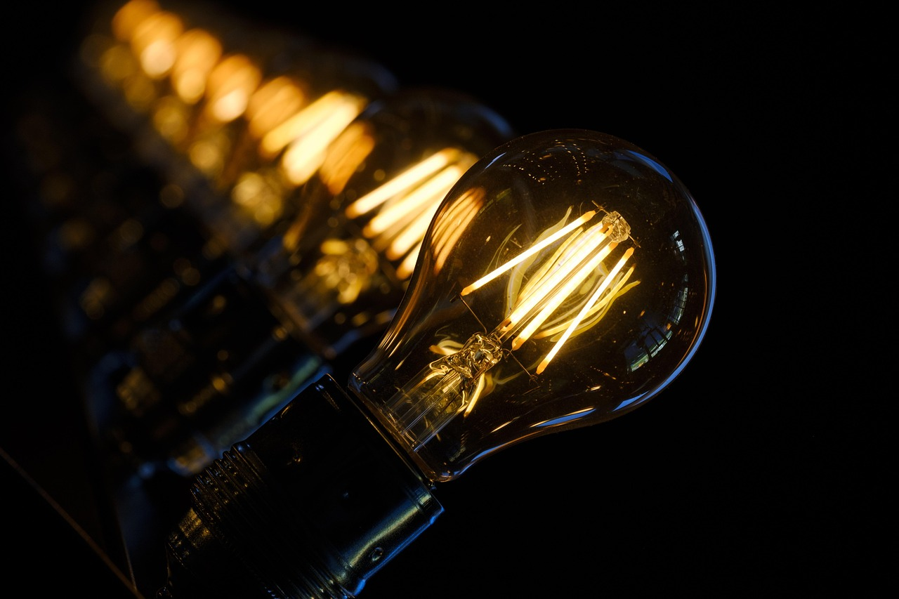

Işık Kullanımıyla Etkileyici Fotoğraflar Nasıl Çekilir?
Fotoğrafçılığın özü ışıktır. Işık doğru kullanıldığında, sıradan bir kare bile etkileyici bir görsel deneyime dönüşebilir. Bu yazıda, ışığı nasıl okuyacağınızı ve yönlendireceğinizi öğrenerek fotoğraflarınızı bir üst seviyeye nasıl taşıyabileceğinizi anlatıyorum.
1. Işık Türlerini Tanıyın
- Doğal Işık: Güneş ışığıdır. Günün farklı saatlerinde farklı renk tonları ve gölgeler üretir.
- Yapay Işık: Flaş, led ışıklar, masa lambaları gibi kaynaklardır. Kontrolü daha kolaydır, ancak doğal görünmesi için dikkatli kullanım gerekir.
2. Günün Saatine Göre Işık Kullanımı
- Altın Saat (Golden Hour): Güneşin doğumundan ve batışından sonraki ilk ve son saat. Işık yumuşaktır, gölgeler uzundur. Portre ve manzara için idealdir.
- Mavi Saat (Blue Hour): Güneşin batışından hemen sonra. Gökyüzü mavi tonlardadır. Şehir fotoğrafları ve uzun pozlamalar için uygundur.
- Öğle Saati: Işık sert ve dik gelir. Kontrast yüksek, gölgeler keskindir. Portre için genellikle önerilmez ama dramatik etki istenirse kullanılabilir.
3. Işığın Yönünü Kullanın
- Ön Işık (Front Light): Konunun önünden gelen ışık, detayları net gösterir. Basit ve açıklayıcıdır.
- Yan Işık (Side Light): Derinlik ve doku yaratır. Özellikle portrelerde yüz hatlarını vurgular.
- Arka Işık (Backlight): Konunun arkasından gelen ışıktır. Silüet veya parlama efekti için kullanılır.
- Üst Işık / Alt Işık: Daha dramatik ve sinematik sonuçlar verir. Sanatsal çalışmalarda tercih edilir.
4. Gölgelerle Kompozisyon Yaratın
Işık kadar gölge de önemlidir. Gölgeler, derinlik ve gizem yaratır. Kontrastın güçlü olduğu sahnelerde gölgeleri bilinçli şekilde kompozisyonun bir parçası haline getirin.
5. Yansımalar ve Difüzyon Kullanımı
- Yansımalar: Cam, su, metal yüzeylerden yansıyan ışıklar ilginç kadrajlar oluşturur.
- Difüzyon: Sert ışığı yumuşatmak için beyaz kumaş, tül veya difüzör kullanabilirsiniz. Böylece daha doğal ve hoş ışıklar elde edilir.
6. Beyaz Ayarı (White Balance) Unutulmamalı
Işık renginin fotoğrafa etkisi büyüktür. Güneş ışığı sarımsı, gölge mavimsi görünür. Manuel beyaz ayarı yaparak renk doğruluğunu sağlayabilirsiniz.
7. Işıkla Yaratıcılığınızı Konuşturun
Işıkla denemeler yapın: Gölgelerle figürler oluşturun, pencere perdesinden süzülen ışığı kullanın, mum ışığında dramatik portreler çekin. Fotoğrafı yalnızca kayıt değil, bir yorum olarak görün.
Sonuç
Işığı anlamadan iyi fotoğraf çekmek mümkün değildir. Bu nedenle her çekimde ışığı gözlemleyin, yönünü ve şiddetini fark edin. Işık sizin fırçanızdır, sahne ise tuvaliniz.
Bu yazıyı paylaş: